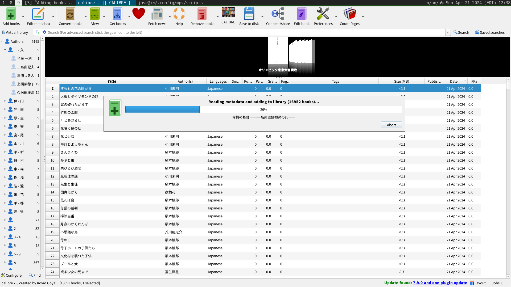

Yes, it can also do that, however.

Calibre is meant for keeping track of books. This might seem superfluous, but it resolves the problem of storing and finding the book you want.
Without calibre, we always end up with some kind of ad-hoc hierarchy of files.
doc/
|- computers/
|- spanish/
|- ..etc.This works fine for awhile, but what if a book is both about computers and in Spanish? Then we see the problem: we need to apply arbitrary numbers of attributes in the form of tags to each book, and have the title, author, publisher, etc. be their own attributes. As Karl Voit points on on his site, karl-voit.at(https://karl-voit.at), real-world items are not split into numbers of distinct hierarchical categories. Tags are a solution!
Supports bulk adding/removing of tags.
Can store an audiobook and a print book togher in a single listing using the formats dialogue.
Very powerful searching/filtering of books. The latest update added a cover viewer deck to the top.
Send files to device, or delete them. Don’t fill up your device with more books than you are currently reading.
run a server that hosts books with a reader for browser.
Can convert books into any format needed.
Resolves encoding issues.
Resolves bugs in the books using the converter dialogue.
Easily select certain types of books and export to your friends.
Mass download books so you can search for them in your Calibre instead of on Google.
Install the “count pages” plugin to sort by book length or calculated reading difficulty rating.
…more?
How Japanese Aquire Books · How to take notes: not self-help advice · sbm · karl-voit.at/2022/01/29/How-to-Use-Tags